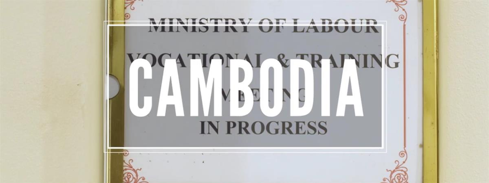
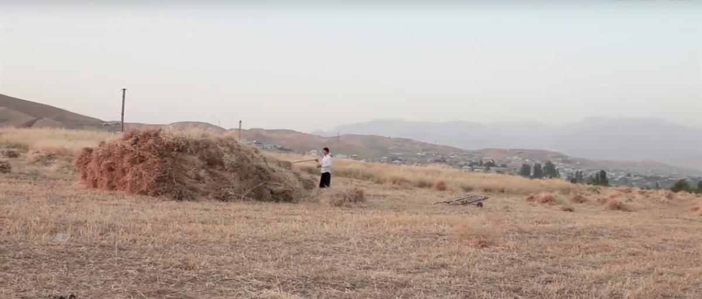
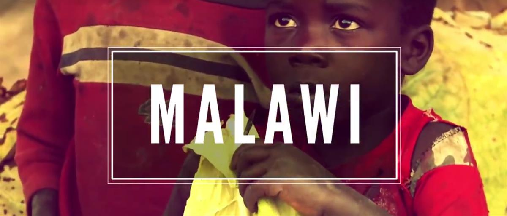
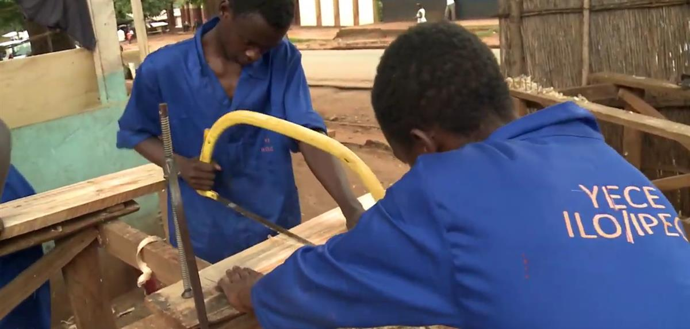
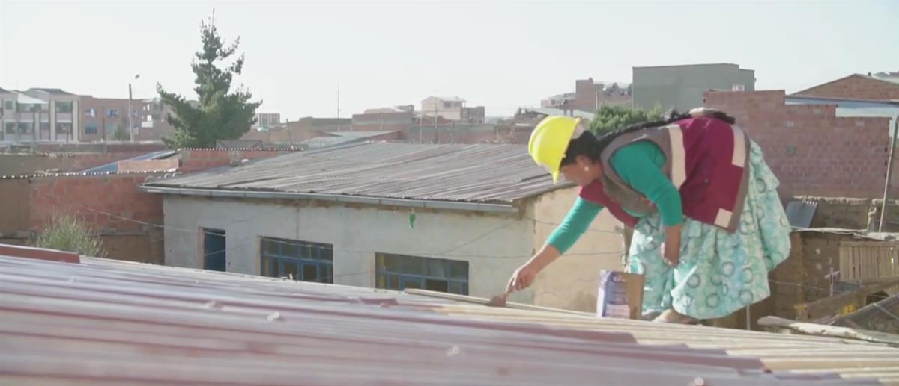
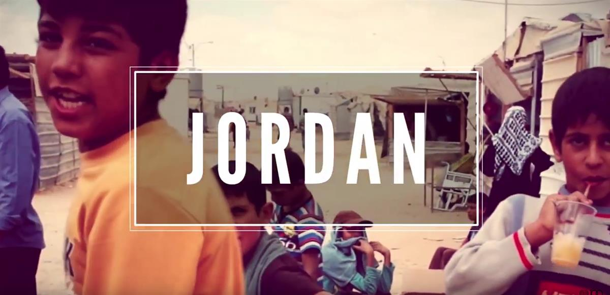
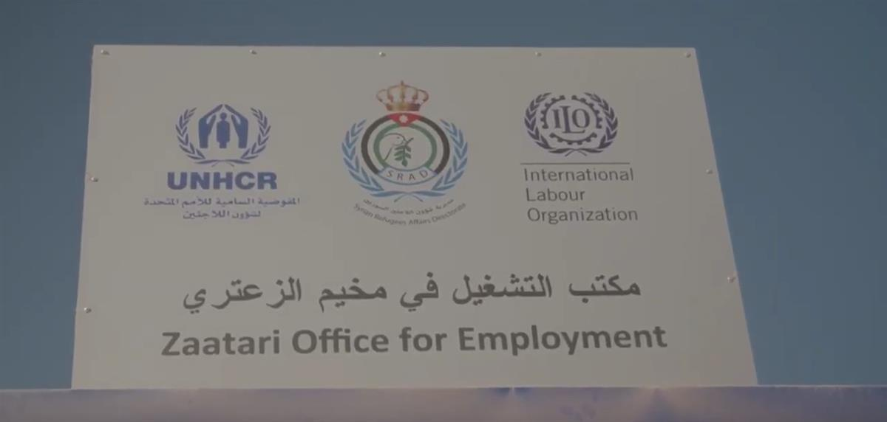

International Labour Organization
One of the main missions of the International Labour Organization is to improve people's lives by advancing social justice and promoting decent work for everyone, and in this video you will discover a few of our 760 ongoing projects around the world which do just that.
SOURCE: INTERNATIONAL LABOUR ORGANISATION
SOURCE: ILO TV






